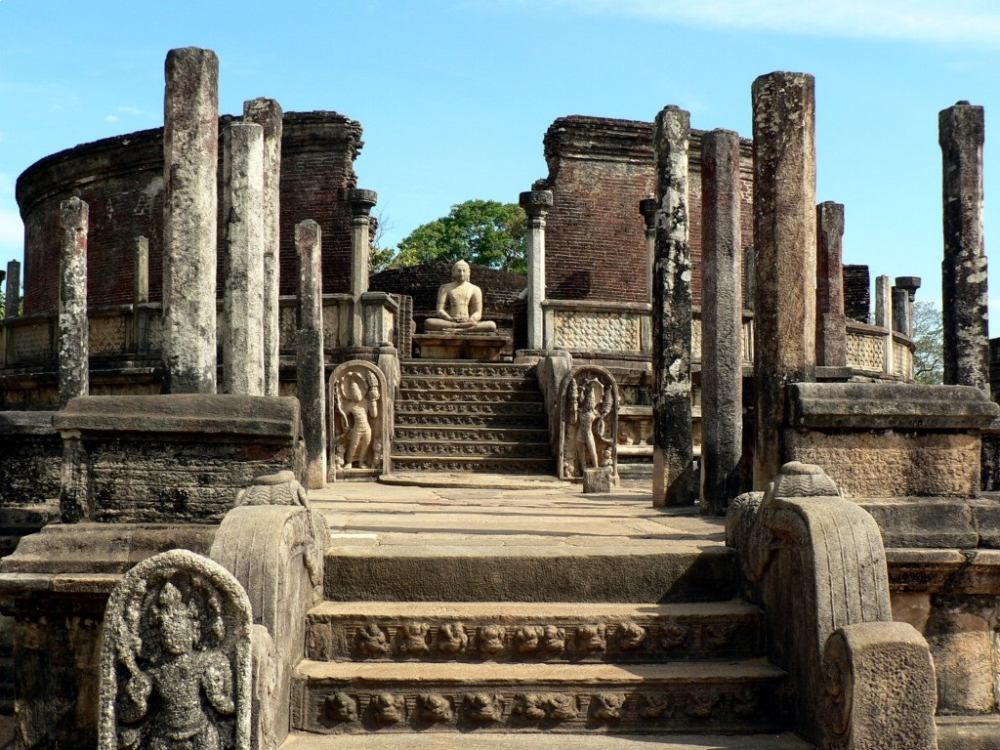

RuinsDetails
Vatadage in Polonnaruwa

A circular relic house possesses an elegance and beauty that is rare even in ancient Sri Lanka.
In line with the outer circle of stone pillars is a tastefully ornamented screen wall patterned with four petalled flowers.
The access stairs at the cardinal points are beautifully carved. At the head of each flight is a Buddha statue in stone. Vatadage is lavished with moonstones and guard stones.